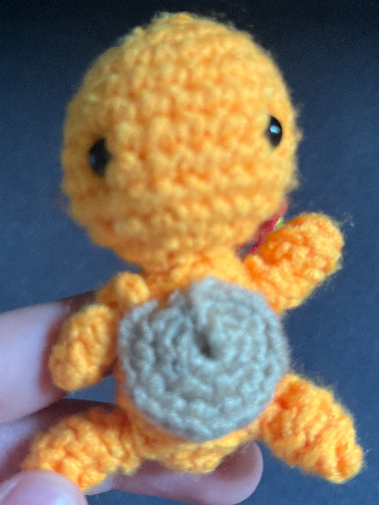
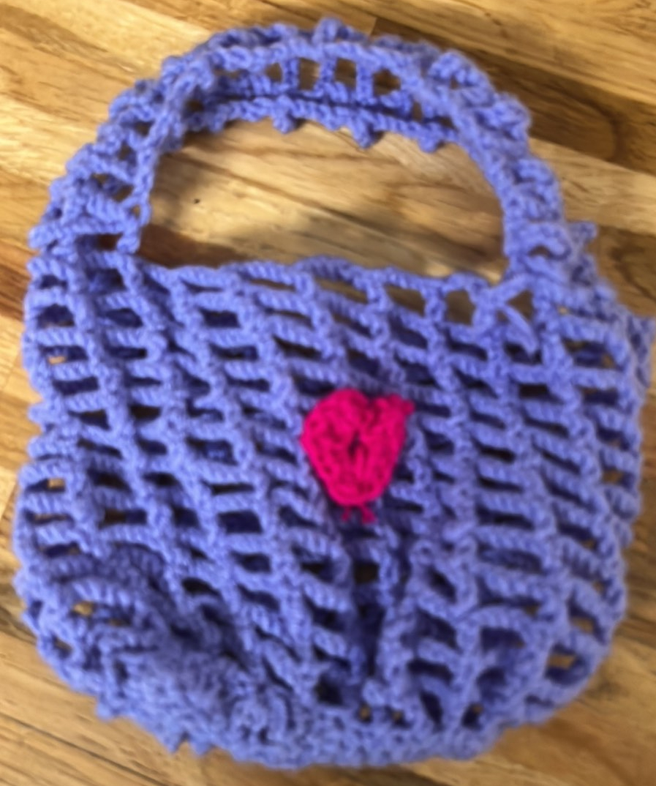
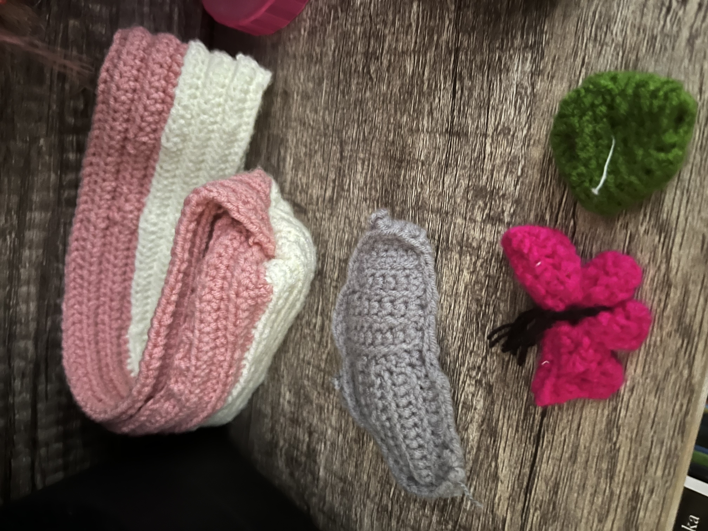
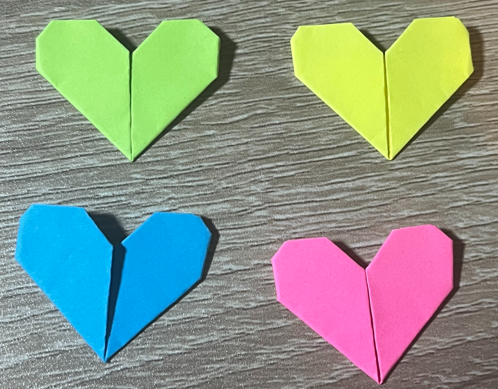
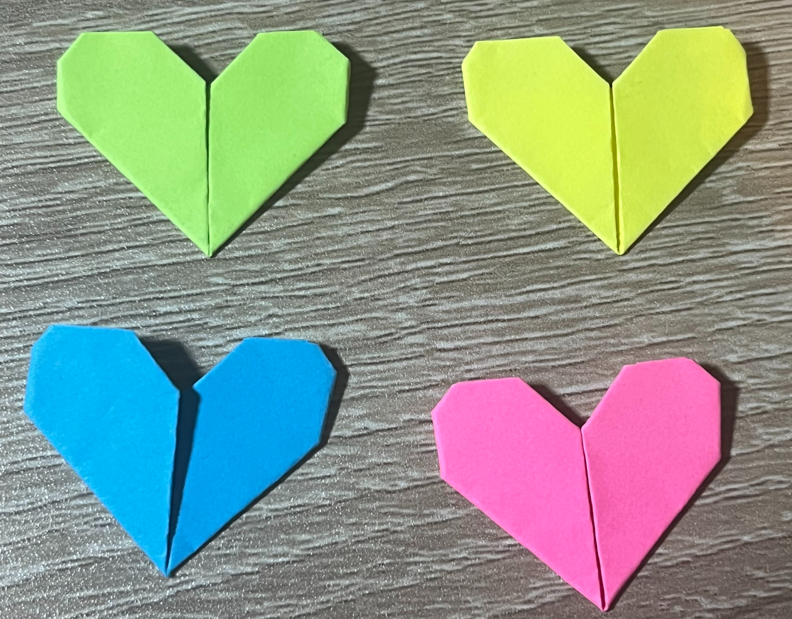

Things I've made
  
 


Origami
I remember when my older cousin taught me how to make a fortune teller, from them on I started doing origami and I enjoyed it so much. It was the way that you could turn a piece of paper into a shape. It was so mesmerizing.
Crochet
I started to crochet when I was 13 years old. My first project was this bag for my mom, it turned out okay and I was happy about it. My mom was really happy when I gave it to her.
Jewelry
For my 14th birthday, some of my friends bought me some chains, bracelets, and cute charms. With these things I started to make bracelets and necklaces. I have a lot at home that I want to sell.